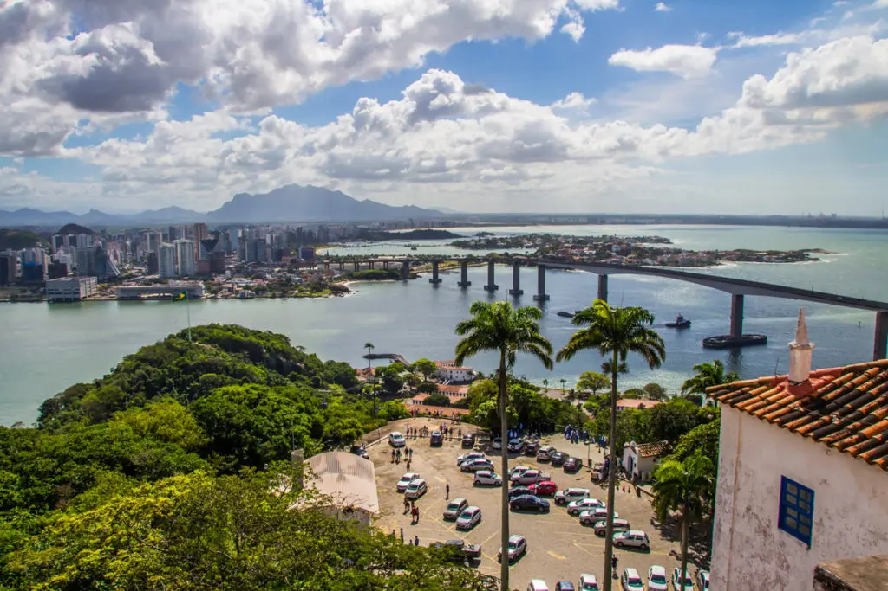
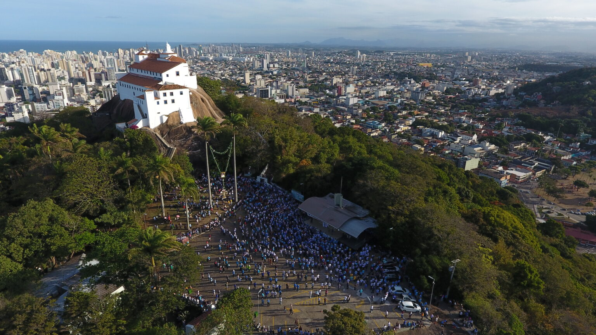
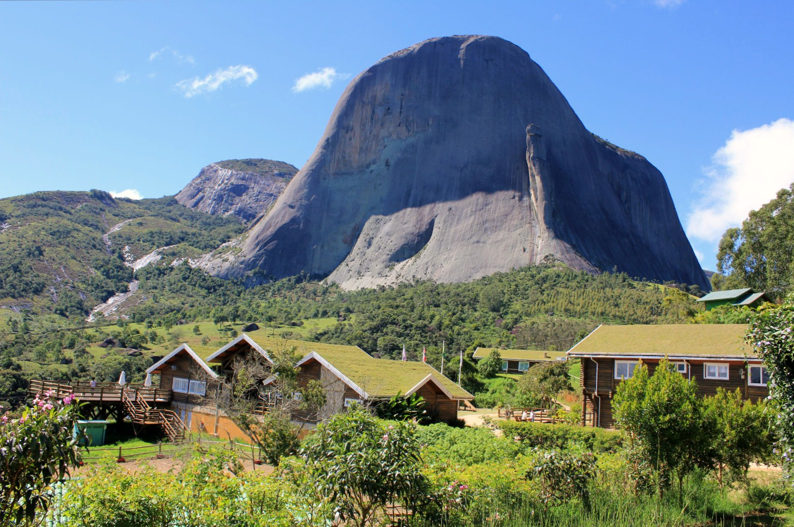
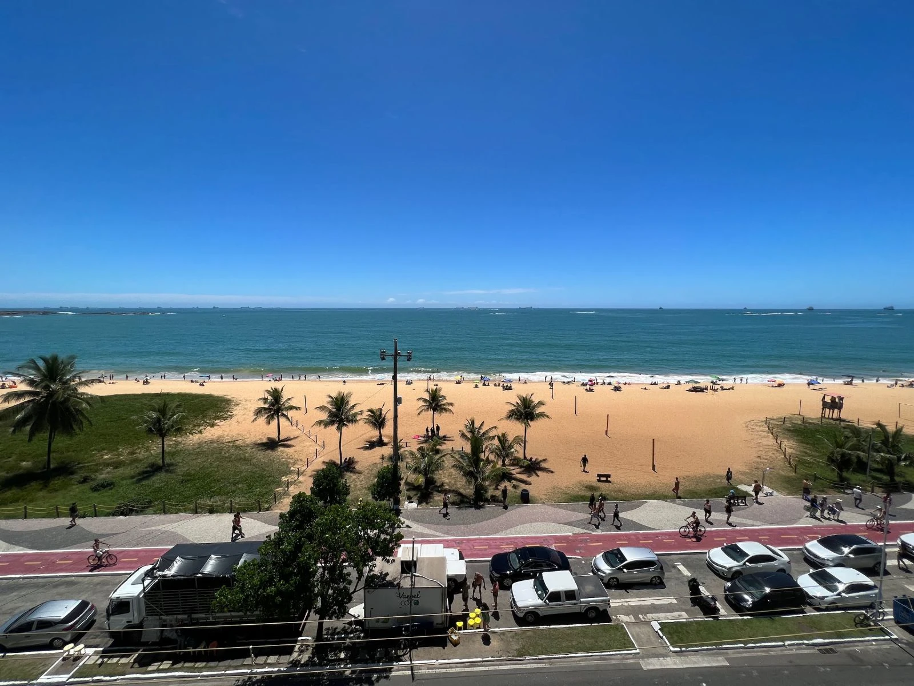
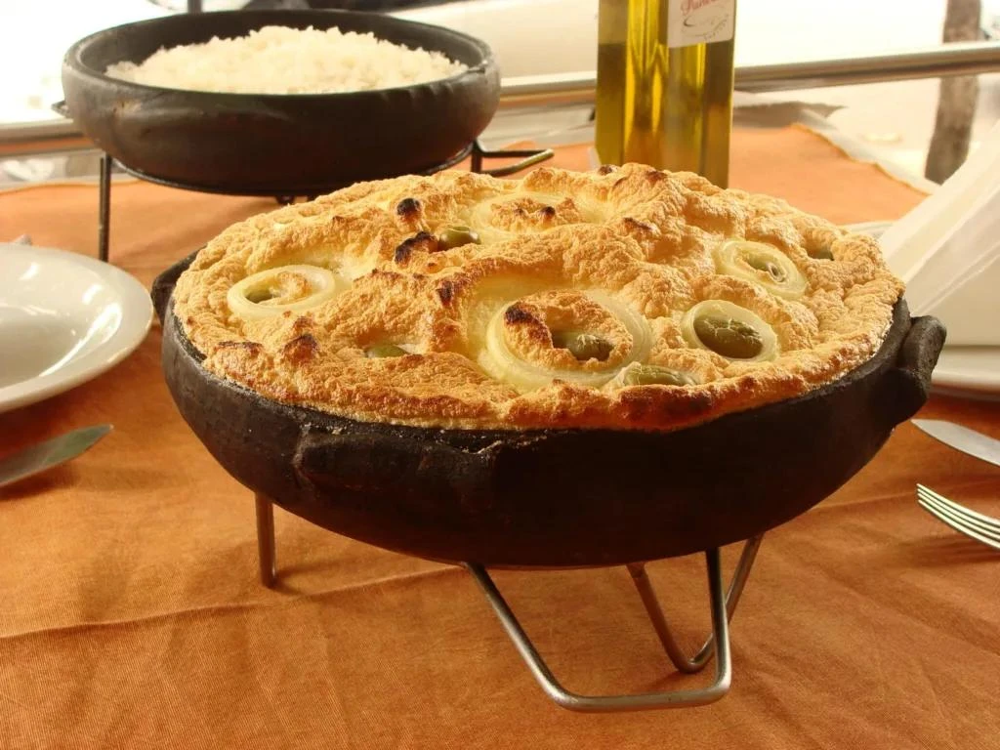
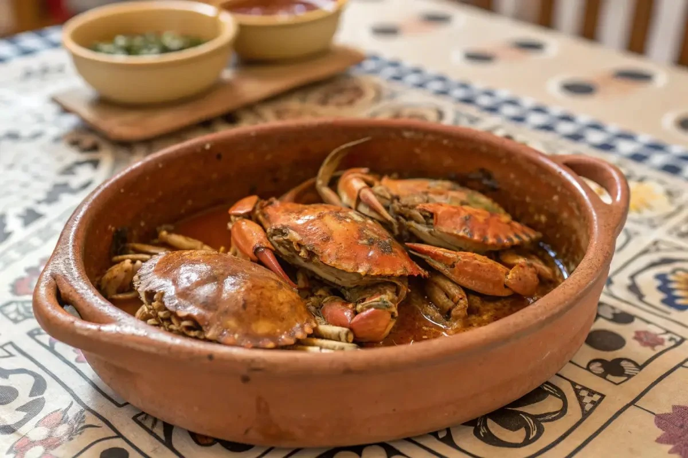

Capital
Vitória
Conheça destinos, culturas, sabores e paisagens de todas as regiões
brasileiras.
Destinos, culturas e paisagens
incríveis te esperam.
O Espírito Santo é um estado localizado na Região Sudeste do Brasil, conhecido por seu belo litoral, montanhas, rica cultura e forte influência de imigrantes europeus. Apesar de ser um dos menores estados brasileiros em extensão territorial, possui grande diversidade de paisagens, reunindo praias, ilhas, reservas naturais e regiões serranas. O turismo capixaba destaca-se tanto pelas atrações litorâneas quanto pelo clima agradável das montanhas.

Vitória
Aproximadamente 46.074 km²
Cerca de 4,1 milhões de habitantes
Sudeste

O Convento da Penha é um dos mais antigos santuários religiosos do Brasil. Localizado no alto de um morro, oferece uma vista panorâmica impressionante da Grande Vitória.

O Parque Estadual da Pedra Azul é um dos cartões-postais do estado. A famosa formação rochosa muda de tonalidade ao longo do dia devido à incidência da luz solar.

Localizada em Vila Velha, a Praia da Costa é uma das praias mais famosas do Espírito Santo. Conhecida por suas águas claras, boa infraestrutura e bela vista para o mar, é um dos principais destinos turísticos do estado, atraindo visitantes durante todo o ano.
.webp)
A Moqueca Capixaba é o prato mais famoso do estado. Diferentemente da versão baiana, não utiliza azeite de dendê nem leite de coco, valorizando o sabor natural dos frutos do mar.

A Torta Capixaba é tradicionalmente consumida durante a Semana Santa. É preparada com frutos do mar, palmito e diversos temperos.

Prato bastante popular no litoral capixaba, consiste em caranguejos cozidos e temperados, geralmente servidos em reuniões familiares e eventos gastronômicos.
O Espírito Santo possui clima tropical no litoral e temperaturas mais amenas nas regiões serranas. O estado pode ser visitado durante todo o ano.
O Espírito Santo possui clima tropical no litoral e temperaturas mais amenas nas regiões serranas. O estado pode ser visitado durante todo o ano.
Para praias e vida urbana, a Grande Vitória e o litoral sul são excelentes opções. Para quem prefere clima mais fresco, montanhas e ecoturismo, a região serrana de Domingos Martins e Pedra Azul é altamente recomendada.
Para praias e vida urbana, a Grande Vitória e o litoral sul são excelentes opções. Para quem prefere clima mais fresco, montanhas e ecoturismo, a região serrana de Domingos Martins e Pedra Azul é altamente recomendada.
A culinária capixaba é uma das mais tradicionais do Brasil. Experimentar a moqueca capixaba e a torta capixaba é essencial para conhecer a identidade cultural e gastronômica do estado.
A culinária capixaba é uma das mais tradicionais do Brasil. Experimentar a moqueca capixaba e a torta capixaba é essencial para conhecer a identidade cultural e gastronômica do estado.